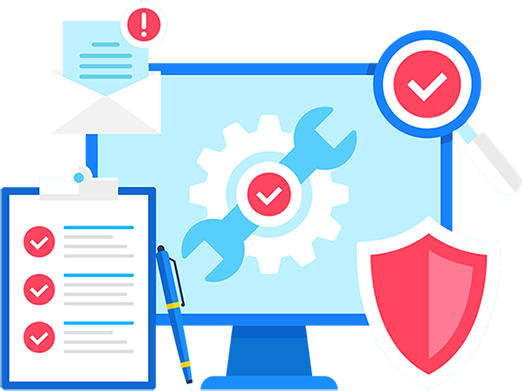

Adknown provides a range of services, including website design and development, search engine optimization (SEO), social media marketing, email marketing, and pay-per-click advertising. Adknown's goal is to help businesses and organizations of all sizes grow their online presence and generate more leads and revenue. In addition to digital marketing services, Adknown also offers content writing, graphic design, and video production services to help clients create engaging and effective online content. The company takes a data-driven approach to marketing and uses analytics and reporting to measure and optimize the performance of campaigns. Overall, Adknown's services are designed to help businesses succeed in the competitive online landscape by increasing their visibility, driving traffic to their websites, and converting leads into customers.
Overview
I was hired at Adknown to achieve three main goals:
- Lessen the workload of the CTO
- Migrate IT support to internal from external
- Streamline procedures to provide a seamless integration for future company IT support
Goal 1
Before my arrival the CTO held the responsiblities of leading the software development team as well as handling all IT related issues within the company. Shortly after my starting at Adknown I was able to take over all IT related issues. Some of these responsiblities included:
- Assembling, dissasembling and configuring work stations
- Creating and storing backups for computers with Windows, Mac, and Linux operating systems
- Effectively communicating with workers to troubleshoot their computer problems
I was the person to call when a piece of technology needed to be set up, configured or fixed.
Goal 2
Adknown had been using external IT support for remote access and monitoring services. They found their service provider to be expensive and ineffective. I was in charge of finding an in-house alternative to this issue. This involved me:
- Researching remote access and monitoring services for small businesses
- Presenting my findings and device deployement strategy to the CTO
By the end of my placement Adknown had canceled their external services and replaced their remote access services with my recommended technologies.

Goal 3
In order to expedite the training process for future IT support I did my best to streamline my duties. This included:
- Constructing industrial size shelving units and methodically organizing IT equipment for ease of use
- Creating detailed documentation regarding day-to-day tasks
Conclusion
In conclusion I am grateful for my time at Adknown. I had the privilege of working with extremely intellegent and considerate people. In my summer here I gained transferable skills that will follow me throughout my life. I am excited to see what is next in my career!